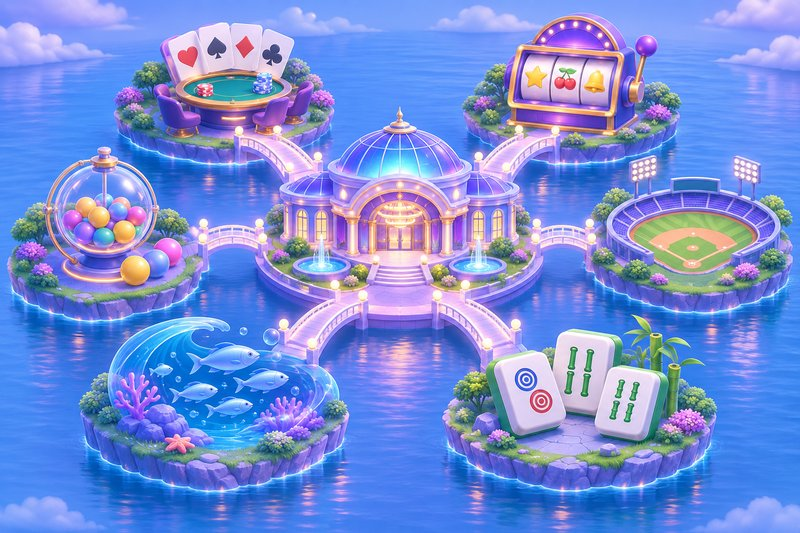

玖發娛樂城是什麼？官網定位、品牌承諾與六大遊戲分類總覽
常有人搜尋品牌名稱之後，卻分不清自己看到的是介紹頁還是會員登入頁。先講結論：玖發娛樂城的官網是一個品牌資訊官網，負責提供遊戲介紹、會員教學與優惠資訊；真正要登入或註冊時，是從官網右上角的「登入」「註冊」按鈕前往會員平台。
這篇把官網公開的內容整理成一張總覽，包含定位、四大品牌承諾、八大服務特色與六大遊戲分類，方便第一次接觸的人快速建立概念。文中不談玩法技巧，只做資訊整理。
官網與會員平台是兩件事
官網文章有時會以「98玖發」稱呼會員平台，兩者的分工其實很單純：官網負責說明，會員平台負責帳戶與遊戲。若會員入口有調整，以官網及平台最新公告為準，所以遇到不確定的連結時，回到官網重新點按鈕會比較保險。
首頁強調的三個重點
- 手機網頁免下載：用手機瀏覽器就能進入會員平台，不必先安裝 App。
- 六大遊戲分類：真人、電子、體育、棋牌、捕魚、彩票各有專區。
- 24 小時線上客服：由會員平台提供的客服管道聯繫。
關於手機 App 的補充
平台另有專屬 App，不過下載說明要由官方平台取得，並先確認作業系統相容性，不建議從來路不明的地方安裝。
玖發娛樂城的四大品牌承諾怎麼解讀
官網把品牌承諾寫成四句話，讀起來像口號，但每一句其實都對應到使用者該做的一個動作。
- 認明品牌、入口清楚：先確認自己是從官網按鈕進入會員平台。
- 活動透明、規則先看：活動有期限與條件，參加前把條款讀完。
- 多元選擇、依喜好體驗：分類多，不代表每一種都要嘗試。
- 全天客服、協助有管道：有疑問時找平台客服，而不是陌生帳號。
八大服務特色一次看
八項特色依序是：官方會員入口、手機網頁免下載、六大遊戲分類、新會員註冊禮、儲值提款教學、會員優惠與返水、VIP 會員禮遇、24 小時線上客服。前三項與首頁重點重疊，後五項則分別對應到新手教學與優惠活動頁面。
選單上找得到的頁面
官網選單包含新手教學（註冊教學、儲值教學、提領教學）、優惠活動、六個遊戲專區，以及責任娛樂、服務條款、隱私權政策。想了解註冊禮、返水或 VIP 的實際條件，都要以官方當期公告為準，這裡不逐一列出數字。
六大遊戲分類各自要先確認什麼
六個專區的共通點是：館別開放與維護狀態以會員平台當下顯示為準。以下依官網的說明，整理每一類進入前建議先看的資訊。
真人、電子與體育
真人娛樂有歐博、DG、WM 等館別，各館桌台介面、投注限額與牌局流程不同，先讀玩法與賠付說明。電子老虎機有 ATG、RSG、BNG、QT 等館別，進入前先了解賠付表、投注設定與功能說明，並設定單次娛樂預算。體育投注有新 Super 體育、WG 體育等館別，要確認賽事時間、選項、賠率與結算規則；賠率可能隨賽況調整，以確認投注時顯示為準。
棋牌、捕魚與彩票
棋牌遊戲有好路棋牌、高登棋牌、DB 棋牌、FG 棋牌，相同遊戲名稱在不同館別可能有不同規則與限額。捕魚機有 ZG 捕魚、DB 多寶捕魚、FG 捕魚，射擊成本、獎勵計算與特殊功能可能不同。彩票遊戲有佰樂透、APL 彩票、WG 彩票，要確認投注截止時間、選項與獎金計算方式，查結果時核對相同遊戲與期別。
讀專區頁的小順序
第一層：規則與賠付說明
不管是哪一個分類，先看懂規則怎麼寫、結果怎麼計算，再決定要不要進入。看不懂的地方可以詢問客服，提問前備妥問題發生時間、錯誤訊息與相關紀錄。
第二層：限額與個人預算
限額是平台或館別訂的，預算則是自己訂的，兩者不要混在一起。限額允許的金額，不等於適合自己的金額。
總覽之外，別漏掉責任娛樂頁
玖發娛樂城官網另外設有責任娛樂頁，重點很明確：會員服務不面向未滿 18 歲者，已滿 18 歲也要確認所在地法律與資格限制。涉及金錢的遊戲可能造成財務損失，參與不應成為收入來源或處理壓力的主要方式。
實際做法是生活費優先，先訂好金額上限與時間上限，輸了不急著追加，也不為了註冊禮、返水或 VIP 進度超出預算。把玖發娛樂城當成眾多娛樂選項之一，覺得不對勁就先停下來，這比任何總覽都重要。
※ 本文整理自官網公開資訊，僅供參考，實際規則與活動內容以官方當期公告為準。未滿 18 歲請勿使用，並請留意所在地法規。